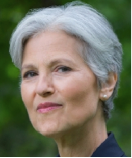

We Need Your Money



This map visualizes the campaign contributions from individuals to presidential candidates during the 2015-2016 election cycle. Toggle between Total and Per Capita to see the combined raw and normalized totals per state through March 2016. Compare Candidates and sequence through time to see how donations change based on election events. Zoom into regions for more detail.
Just about anyone who has been following the 2016 presidential election, or any major election for that matter, knows how important money is to the success of a campaign. The amount of money funneled to elections every cycle is astronomical. Some donations can be tracked back to their source while others are more difficult to track. There are three main ways that money can get to a candidate: from citizens directly to candidates, from citizens and organizations to Political Action Committees (PACs), and from SuperPAC.
Natural Earth, FEC, Sunlightfoundation, OpenSecrets, Candidate Images, Candidate Images, Election Events, Darren Northcott from the Noun Project
We Need Your Money is a collaborative project by Zihan Song, Shelley Witte, and Kristen Vincent for Robert Roth's Interactive Cartography and Geovisualization course at UW-Madison. Completed in May 2016.
Many thanks to Robin Tolochko, Eric Nost, and Carl Sack for their invaluable help!
This project was built with D3, Queue, jQuery, and Bootstrap.